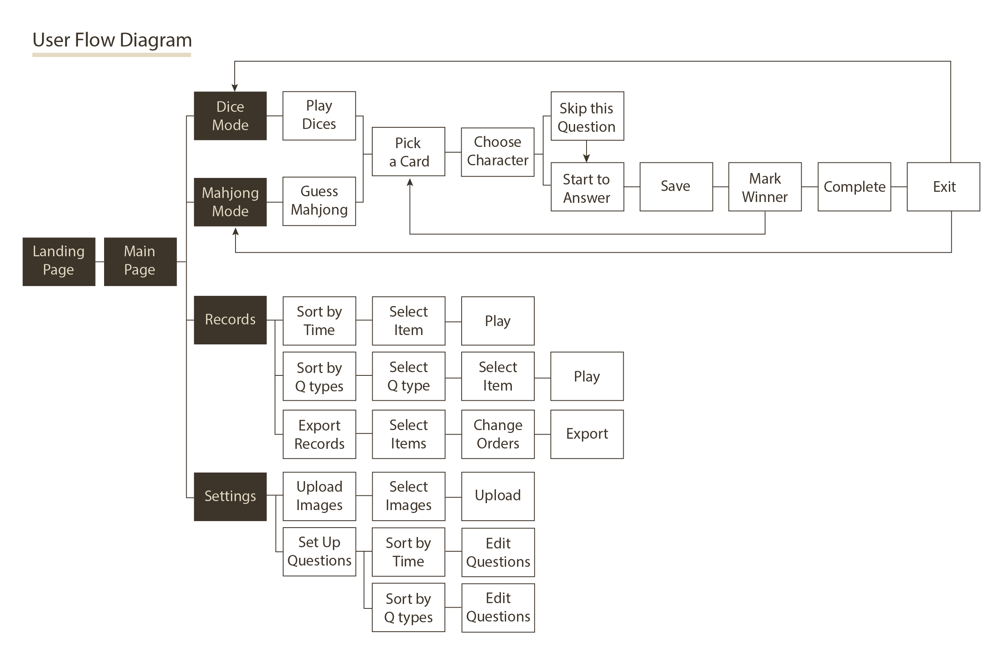
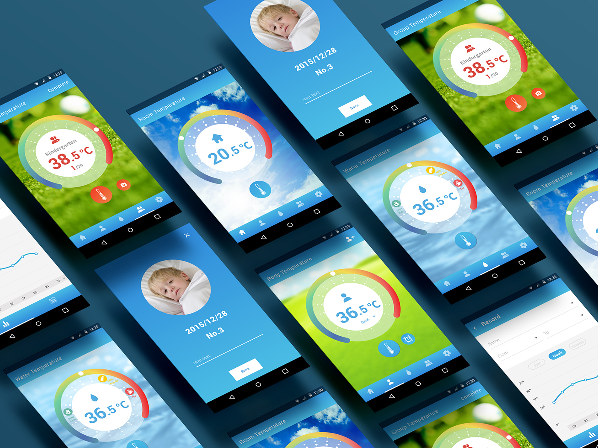

Bluetooth Thermometer
May, 2016
Web Page of Innoorz
May, 2016
Email Recipe
Apirl, 2016
Countdown Timer
Feburary, 2016
Scucess/Erro
Janurary, 2016
Credit Card Checkout
Janurary, 2016
404 Page
Janurary, 2016

May, 2016
May, 2016
Apirl, 2016
Feburary, 2016
Janurary, 2016
Janurary, 2016
Janurary, 2016
Hospitality is to treat others friendly and close the distances between individuals. How about our families? Do you still remember the last time when you talk to your parents and grandparents? Are you curious about your families' life stories? Millions of Memories is an APP on tablet, it can help you better understand your families and create delightful family gathering time.
1. Motivation
1) Help people record their life stories by audio recordings and pictures.
2) Let grandchildren have chances to know more about their grandparents.
3) Create fun interactions between family members.
2. Persona
Sometimes, we want to know more about our families' stories, but it is embarrassed to begin the talk. There are several roles involving in this situation.
3. User Journey
Millions of Memories will become a fun and touched moment during family gathering. As other board games, there is some simple rules and interactive activities
4. User Flow Diagram
5. Wireframe & Low-fidelity Prototype
6. Mockup
I want to make nostalgic feelings, so I use the texture of old paper as the main image and background. Paper is warm and contains lots of memories. And the paper texture can help elders feel less uncomfortable to use digital interface.
7. Another Possibility
Millions of Memories is based on the idea to have fun, so our team also tried to use gachapon as another interface. There is a question and a piece of puzzles at each capsule. Once you turn the key, one of the capsules will drop down. Users can open the capsule and ask one question, and the machine will start to record players' voice automatically. We hope to share happiness and cherish memories with every player in Millions of Memories through different kinds of interfaces.
This is a countdown timer to count remain time of getting off from daily works. You can click the link and start to countdown in nine hours. I hope users feel relax when looking at the page, so I choose the pciture of sky and ocean to construct relaxed feelings.

This is a project to help our users to receive temperature data and help them use the Bluetooth thermometer easily. Users can use this app with Bluetooth sensor to measure measure room, water, body and group temperatures. Also, users can find the page to see the temperature record in a very convenient way.
I'll introduce the ways that I captured those ideas and created the mockups.
Step 1. Collect images of thermometer and temperature. Detach each single material from those pictures (e.g. color gradient, graduations, pointers and numbers).
Step 2. Abstract the ideas of thermometer and temperature. Try to combine those ideas and change into different styles and shapes.
Step 3. Choose 1 material and start to combine with small items. Set up the final visual identity design.
Step 4. Combine those materials of visual identity design with wireframes. Make some adjustments to fit the wireframes and user flows. I hoped users would feel comfortable and positive when they use the app, so I add bright colors and beautiful pictures to create the joyful atmosphere.
